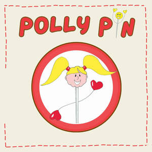

Trade Mark Journal No.2025/048 28 November 2025
UK00004298545 21 November 2025 (7,9,16,25,26,28,41)

- Class 7
- Sewing machinery; Sewing machines; Bobbins for sewing machines; Sewing robots; Needles for sewing machines; Sewing machines for textiles and leather; Sewing machine installations; Electric sewing machines; Sewing machines for household purposes; Quilting machines for use in the manufacture of upholstery; Embroidering machines; Embroidery machines.
- Class 9
- Education software.
- Class 16
- Books; Non-fiction books; Fiction books; Writing books; Books for children; Series of fiction books; Coloring books; Educational books; Story books; Colouring books; Painting books; Picture books; Scrap books; Sticker books; School writing books; Birthday books; Activity books; Children's books; Writing or drawing books; Blank journal books; Books featuring fictional stories; Sewing patterns; Printed sewing patterns; Patterns for dressmaking; Dressmaking patterns for drawing; Fabrics for bookbinding; Dressmaking stencils for drawing; Knitting patterns; Patterns for embroidery; Printed patterns for dressmaking.
- Class 25
- Clothing; Knitwear [clothing]; Jackets [clothing]; Ready-to-wear clothing; Woolen clothing; Garments for protecting clothing; Layettes [clothing]; Clothing layettes; Linen clothing; Headbands [clothing]; Headbands for clothing; Gloves [clothing]; Gloves as clothing; Clothes; Aprons [clothing]; Kerchiefs [clothing]; Jerseys [clothing]; Denims [clothing]; Shorts [clothing]; Gabardines [clothing]; Parts of clothing, footwear and headgear; Windproof clothing; Hoods [clothing]; Embroidered clothing; Wristbands [clothing]; Belts [clothing]; Belts for clothing; Bandeaux [clothing]; Rainproof clothing; Waterproof clothing; Casual clothing; Visors [clothing]; Jackets (Stuff -) [clothing]; Stuff jackets [clothing]; Playsuits [clothing]; Bottoms [clothing]; Clothing for leisure wear; Ready-made clothing; Trunks being clothing; Infant clothing; Woven clothing; Drawers [clothing]; Leisure clothing; Drawers as clothing; Clothing for sports; Sports clothing; Athletic clothing; Ties [clothing]; Clothing for children; Muffs [clothing]; Bodies [clothing]; Clothing for babies; Clothing for infants; Tops [clothing]; Weatherproof clothing; Pockets for clothing; Fabric belts [clothing]; Water-resistant clothing; Handwarmers [clothing]; Clothing for skiing; Beach clothing; Thermal clothing; Braces for clothing; Mitts [clothing]; Dance clothing.
- Class 26
- Sewing thimbles; Thimbles (Sewing -); Sewing needles; Sewing machine needles; Sewing kits; Sewing baskets; Sewing boxes; Boxes (Sewing -); Fabric appliques [haberdashery]; Embroidery; Embroidery for garments; Embroidery needles; Knitting bobbins [other than parts of machines]; Knitting needles; Knitting kits; Stitch holders for use in knitting; Embroidering crochet hooks; Hooks (Embroidering crochet -); Crochet hooks (Embroidering -); Fabric appliques; Sewing needle cases of precious metal; Bindings for hemming clothing; Bobbins for retaining embroidery floss or wool [not parts of machines]; Sewing needles with an oval eye; Accessories for apparel, sewing articles and decorative textile articles; Hand-knitting needles; Crochet needles.
- Class 28
- Toys; Toys, games, and playthings; Ride-on toys; Cuddly toys; Puzzles [toys]; Toys for sandpits; Stuffed toys; Plush toys; Inflatable toys; Toys for babies; Noisemakers [toys]; Wind-up toys; Plastic toys; Scooters [toys]; Windup toys; Toys for infants; Toy dolls; Educational toys; Outdoor toys; Bendable toys; Toy playsets; Bath toys; Infant toys; Sandbox toys; Bathtub toys; Action figures [toys or playthings]; Electronic toys; Whistles [toys]; Sand toys; Inflatable ride-on toys; Soft toys; Bouncing toys; Cloth toys; Musical toys; Toy figurines; Play mats for use with toy vehicles [playthings]; Wheeled toys; Mechanical toys; Clockwork toys; Developmental toys; Fluffy toys; Plastic toys for use in the bath; Crib mobiles [toys]; Stuffed animals [toys]; Stacking toys; Fabric toys; Drawing toys; Play mats incorporating infant toys [playthings]; Action toys; Stuffed and plush toys; Stuffed plush toys; Plush stuffed toys; Battery-operated action toys; Sketching toys; Children's toys; Squeezable squeaking toys; Toy bicycles; Smart toys; Plastic character toys; Toy tableware; Construction toys; Articles of clothing for toys; Push toys; Talking toys; Squeeze toys; Toy bakeware and toy cookware; Toy xylophones; Toy mobiles; Stuffed bean-filled toys; Clothing for toy figures; Pull toys; Toy cars; Toy strollers; Water-squirting toys; Toy balloons; Toy scooters; Assembly toys; Toy cookware; Toy harmonicas; Music box toys; Toy robots; Smart plush toys; Toy tools; Toys in the form of puzzles; Xylophones being musical toys; Soft sculpture toys; Novelty toys for parties; Inflatable pool toys; Costumes being childrens playthings; Toy bakeware; Toy balls; Toy pushchairs; Toy vehicles; Puzzle mats [toys]; Playthings.
- Class 41
- Education; Pre-school education; Education and training; Academies [education]; Education and instruction; Education services; Services of schools [education]; University education services; Academy services (Education -); Education academy services; Academy education services; Education, teaching and training; Vocational education and training services; Education and instruction services; Training and education services; Education and training services; Kindergarten services [education or entertainment]; Provision of education courses; Educational services for providing courses of education; Provision of training and education; Provision of education and training; Providing of education; Entertainment, education and instruction services; Education information; Information (Education -); Primary education services; Primary education services relating to literacy; Online education services; Club education services; Education services relating to fashion; Education services relating to conservation of the environment.
Polly Pin Ltd